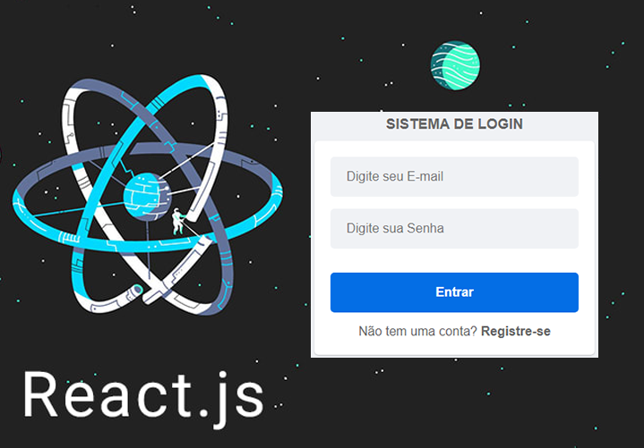

Jun 29, 2022
Primeiro Projeto utilizando ReactJS

👨💻System-Login-reactjs
Projeto feito por um iniciante em reactjs, portanto o código está bem otimizado devido a pesquisas e varios tutoriais.
o projeto tem como o fundamento em uma tela de login aonde as informações do usuario é armazeada no proprio navegador. 👍